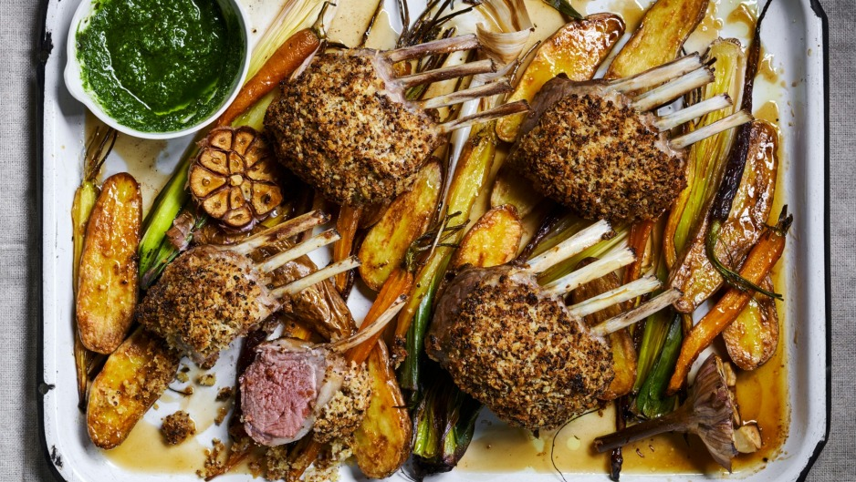

Sunday Roast Lamb

Sunday Roast Lamb
Ingredients
- 1 cup panko breadcrumbs
- 2 tsp seeded mustard
- 3 tbsp extra virgin olive oil
- 4 x 300g lamb racks
- 200g dutch carrots
- 200g kipfler potatoes
- 1 bulb garlic
- 2 small leeks
- 4 tbsp honey
- 3 tbsp malt vinegar
- 1 small bunch mint
- Preheat the oven to 200C fan-forced (220C conventional). Place the breadcrumbs, mustard and 1 tablespoon of the oil in a small bowl. Season with salt and pepper and press onto the lamb racks.
- Place the carrots, potatoes, garlic and leeks in a roasting tray. Mix to combine 2 tablespoons honey, 1 tablespoon malt vinegar and remaining 2 tablespoons of oil. Season with salt and pepper and toss to combine. Top with lamb.
- Place in the oven and roast for 30 minutes for medium rare. Remove, loosely cover and set aside to rest for 5 minutes.
- Place in the oven and roast for 30 minutes for medium rare. Remove, loosely cover and set aside to rest for 5 minutes.
- Serve the lamb with roasted vegetables and mint sauce.